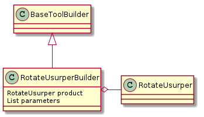

RotateCommandUsurper – How to build a class for the user¶
This is a recollected case-study of building the RotateCommandUsurper. The RotateCommandUsurper was created to replace the RotateCommand in order to control a newer turntable. The request was made that one of the old tables be run alongside one of the new tables so the old RotateCommand was left in place and the Usurper created alongside it.
The purpose of this document is not so much to explain how the RotateCommandUsurper works (that should be in the actual code-file) but rather to explain what had to be done to make it work as a declarable option in the user’s configuration file. That is to say to make is so that the user would be able to run it by putting the following in the config file:
setup_test = rotate_cube
As well as adding the ‘[ROTATE_CUBE]’ section and other supporting sections to the configuration file.
The Remote Rotate Command¶
This follows the basic command pattern. It assumes that there is a remote device attached to a turntable and that on this device there is a command called rotate that controls the turntable.
Creating the Ape’s Command¶
Two initial design decisions were made that changed the behavior of the usurper slightly from the RotateCommand. One was that all the behavior would be deferred to the controlling code for the device (the remote command) instead of trying to observe and interpert the string output of the turntable inside the APE, as was the case with the original RotateCommand. The second decision was that the parameters passed into the __call__ would be assumed to be the string arguments to pass to the rotate command on the remote device, since the logic for interpreting the angles were already built into the rotate command line interface.
To start with, a class was created that inherited from the RotateCommand so that only the __call__ and rotate methods had to be updated.
| RotateCommandUsurper(connections[, retries]) | Command to rotate turntables |
| RotateCommand(connections[, retries]) | A class to issue a remote ‘rotate’ command (older version for pre-Cameron turntables) |

The Call Method¶
The __call__ method for classes that are declarable by the user in the configuration all share the same signature.
def __call__(self, parameters, filename_prefix=None):
<do something>
return
The parameters are a named-tuple (or something like that) that have the form:
parameters.<identifier>.parameters
The <identifier> is a name unique to the class using the parameters so that they can find their parameters (the parameters named-tuple has the parameters for all the classes declared in the configuration). This was set in the rotate module to be ‘rotate_usurper’ so in this case the RotateUsurperCommand accesses its parameters like this:
parameters.rotate_usurper.parameters
Part of the change in behavior for the RotateUsurperCommand was a request that the tables it controls be given their own angles (rather than giving them all the same angles as it was done previously). To achieve this two design changes were made:
- The NonLocalConnection (parent to the SSHConnection) was given an ‘identifier’ attribute
- parameters.rotate_usurper.parameters was made a dictionary of <connection.identifier>: <arguments string> pairs
The main thing to take away from this is that all classes created to be declarable by the user in the configuration should expect the parameters to be passed into them in this way. Additionally, if the __call__ returns a string, it will be added to the file name so in this case the identifiers and arguments were concatenated into a string and returned. This could conceivably create a very big filename, but it seemed the field-expedient thing to do.
The RotateUsurperBuilder¶
The next step in creating class that can be called in the configuration file is creating a builder for it. In this case the RotateUsurperBuilder was created.

| RotateUsurperBuilder(*args, **kwargs) | Builder of RotateUsurper object and parameters | ||
| RotateUsurperBuilder.parameters | for each angle, create a dict of <table-name:arguments string> | ||
| RotateUsurperBuilder.product | Built RotateUsurper object | ||
| RotateUsurperBuilder.connections_parameters |
|
||
| RotateUsurperBuilder.connections |
|
| BaseToolBuilder(master, config_map, ...) | A Base class to build tool-builders around. |
To create a ToolBuilder there are two required properties that need to be implemented – parameters, the named tuples passed into the __call__ method, and product, the built class (in this case the RotateUsurperBuilder).
The Parameters¶
I won’t talk about the creation of the dictionaries used as the payload for the parameters, but there is a pattern to building the parameters that is pretty much the same for each ToolBuilder class.
- Create a list
- Create the parameters that need to be passed in on each call – in this case each angle for the tables needs its own dictionary
- Put all the parameters you created in the list in the order of execution
- Create a basetoolbuilder.Parameters named tuple with the name set to the identifier the call expects (in this case ‘rotate_usurper’) and the parameters set to the list you created
- Append the Parameters named tuple to self.previous_parameters which was inherited from the BaseToolBuilder
- Set self._parameters equal to self.previous_parameters
- Return self._parameters
I think you could get away with just returning self.previous_parameters but since the RotateUsurperBuilder.parameters property is checking if self._parameters is None to decide whether to build the list I decide that it’s better to set it to something so if it gets called more than once it doesn’t rebuild everything all over again.
To clarify a bit, the list in this case is named table_parameters and consists of <table name using config section>:<arguments string for 'rotate'> dictionaries – one dictionary per angle and one entry in each dictionary for each table. Once this list is created the previous_parameters are set:
self.previous_parameters.append(Parameters(name='rotate_usurper,
parameters=table_parameters))
self._parameters = self.previous_parameters
This pattern is common to all the tool-builders
The Product¶
The product is an instance of the RotateCommandUsurper with the ssh-connections created from the configuration file passed into the constructor:
self._product = RotateCommandUsurper(connections=self.connections)
The ToolBuilder¶
The Old Ape didn’t have a plugin system like the new APE or the Tuna so there’s a clunky module called the toolbuilder that holds the class definitions for classes that can be declared by the user in the configuration file.
ToolBuilderEnum¶
The first thing that has to be done is to add the string that the user can use to declare the class in the configuration file. This is done by adding it to the ToolBuilderEnum. In this case I used ‘rotate_cube’ because I thought that it would be easier to remember than ‘rotate_usurper’ (since the new turntable is cube-like).
rotate_cube = 'rotate_cube'
ToolBuilder¶
Next the class definition for the Builder has to be added to the ToolBuilder Class as a property:
@property
def rotate_cube(self):
"""
:return: RotateUsurperBuilder
"""
from rotatebuilder import RotateUsurperBuilder
return RotateUsurperBuilder
Outcome¶
Now when the APE sees the ‘rotate_cube’ declaration in the ‘[TEST]’ section of the user’s configuration file:
[TEST]
setup_test = rotate_cube
execute_test = iperf
It will import the RotateUsurperBuilder using the ToolBuilder and pass the RotateUsurperBuilder.product the RotateUsurperBuilder.parameters entries before running each test.
Conclusion¶
This was a description of how the RotateUsurperCommand was added to the APE, and more generally what has to be done to add classes that users can declare to the APE.
- Create the class to execute with the __call__ method expecting the parameters passed
- Create a builder class that will create your new class as well as the parameters to give it
- Register the name the user will use in the configuration file with the ToolBuilderEnum
- Register the builder’s class definition with the ToolBuilder